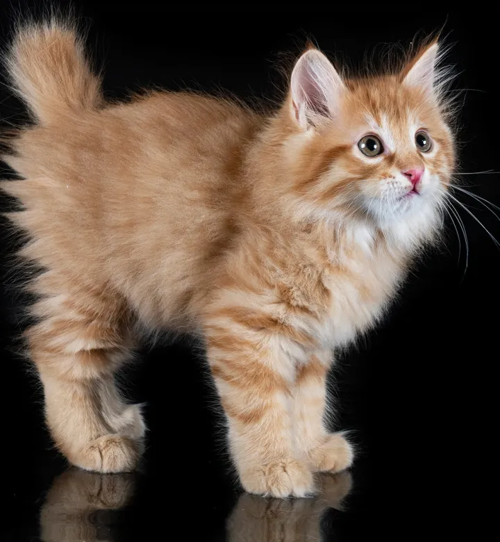
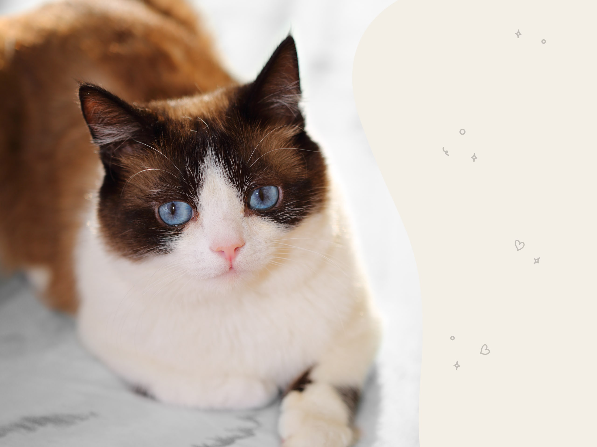

The oncilla, also known as the northern tiger cat, little spotted cat, and tigrillo, is a small spotted cat ranging from Central America to central Brazil. It is listed as Vulnerable on the IUCN Red List, and the population is threatened by deforestation and conversion of habitat to agricultural land.
The ocelot is a medium-sized spotted wild cat that reaches 40–50 cm at the shoulders and weighs between 7 and 15.5 kg on average. It is native to the southwestern United States, Mexico, Central and South America, and the Caribbean islands of Trinidad and Margarita.